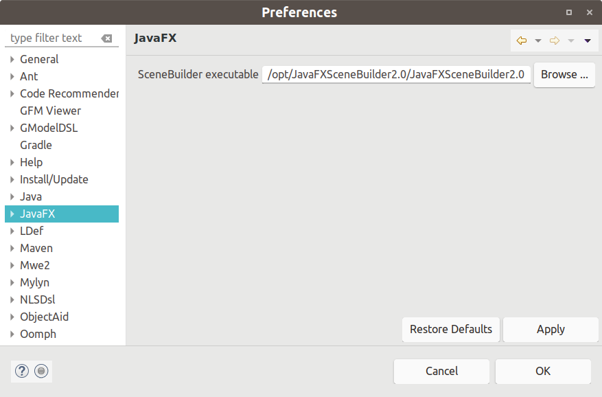
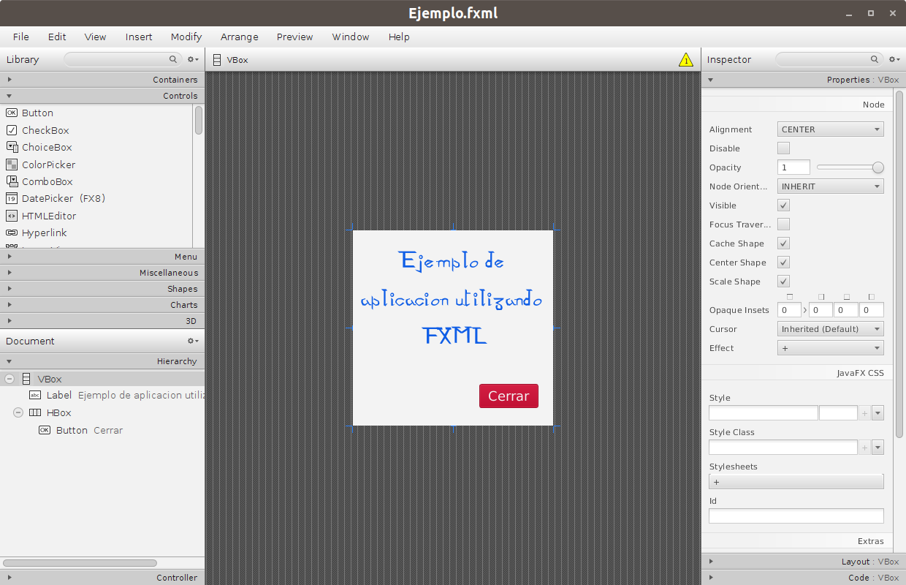
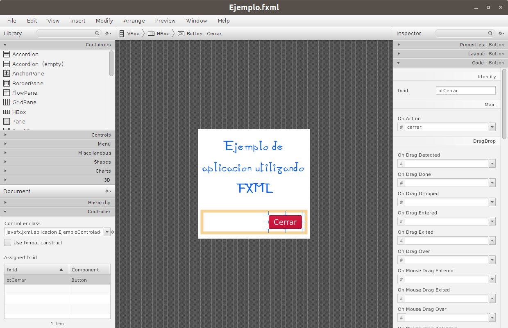

SceneBuilder
Como he comentado, la buena noticia es que Oracle ha desarrollado un editor para ficheros JXML: SceneBuilder.
SceneBuilder es un editor WYSIWYG (lo que ves es lo que obtienes) de ficheros JXML multiplataforma que hace que el diseño de interfaces usando JXML para JavaFX se convierta en una tarea muy sencilla. SceneBuilder nos permite diseñar la interfaz de una forma visual arrastrando los diferentes controles, paneles de diseño, etc. a dicha interfaz para así crear la estructura de la misma. Entre otras cosas permite:
- Modificar las diferentes propiedades de los elementos que la componen.
- Definir el controlador para dicha vista.
- Asignar identificadores a los diferentes componentes para luego poder acceder a ellos desde el controlador.
- Definir los manejadores para los principales eventos para un componente dado.
La herramienta la puedes descargar desde el siguiente enlace: SceneBuilder.
Si utilizas NetBeans, la integración con este IDE es automática. Si utilizas Eclipse deberás indicarle al IDE el path para acceder al ejecutable de SceneBuilder desde el menú Window|Preferences en la categoría JavaFX.

Una vez integrada la herramienta en nuestro IDE, podremos situarnos encima de cualquier archivo .jxml y, eligiendo la opción Open en NetBeans o Open with SceneBuilder en Eclipse, abrir la herramienta para dicho fichero.
En la siguiente imagen podemos ver el aspecto de SceneBuilder para el fichero Ejemplo.jxml del apartado anterior.


Como podéis observar la interfaz cuenta con varios paneles:
- Panel librería situado arriba a la izquierda. En el que encontramos los diferentes controles, paneles de diseño, etc. agrupados por categorías y que podremos arrastrar al panel central de diseño.
- Panel dodumento situado abajo a la izquierda. Este panel contiene dos categorías: una primera nombrada como jerarquía y en la que podremos observar la jerarquía de nodos de nuestro diseño y una segunda categoría nombrada como controlador en la que podemos indicar el controlador para este fichero jxml y en la que nos aparecen los controles que tenemos mapeados entre el fichero jxml y el controlador (por medio de las anotaciones @JXML del controlador).
- Panel inspector situado a la derecha. En este panel podremos ir cambiando las diferentes propiedades del control que tengamos seleccionado. Se agrupa en tres categorías: una primera categoría nombrada como propiedades en la que podremos cambiar las propiedades generales de dicho control, otra segunda categoría nombrada como diseño en la que podremos cambiar propiedades que afectan al diseño del control como los margenes, el relleno, etc. y una tercera categoría nombrada como código en la que podremos asignar un identificador al control (que luego deberemos mapear en el controlador por medio de las anotaciones @JXML) y en la que podremos indicar el nombre del método que hará de manejador para un evento dado de dicho control (que también deberemos tener mapeado en el controlador por medio de anotaciones @JXML).
- Un panel central de diseño en el que visualmente iremos diseñando la interfaz arrastrando y soltando controles, paneles de diseño, etc.
El uso de este editor es bastante intuitivo y no me detendré más en su manejo, ya que con los conocimientos adquiridos hasta ahora no te debería plantear ningún problema, ya que si has sido capaz de crear las interfaces de los ejemplos mediante código, hacerlo de esta forma debe ser pan comido.
Sólo quiero comentar que mediante SceneBuilder sólo podemos asignar los manejadores para los eventos que afectan a un control, pero no podemos hacerlo para los eventos que afectan a propiedades de los modelos. De tal forma que si necesitamos manejar eventos de este tipo deberemos registrarlos en el método initialize del controlador que ya hemos visto anteriormente.